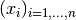
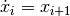

PyTrajectory is a Python library for the determination of the feed forward control to achieve a transition between desired states of a nonlinear control system.
Contents
This function takes a callable vectorfield of a control system that is to be evaluated with symbols for the state and input variables and returns a corresponding function that can be evaluated with numeric values for these variables.
| Parameters: |
|
|---|---|
| Returns: | The callable (“numeric”) vectorfield of the control system. |
| Return type: | callable |
Creates callable saturation function and its first derivative to project the solution found for an unconstrained state variable back on the original constrained one.
For more information, please have a look at Handling constraints.
| Parameters: |
|
|---|---|
| Returns: |
|
| Parameters: |
|
|---|---|
| Returns: |
|
Base class of the PyTrajectory project.
Trajectory manages everything from analysing the given system over initialising the spline functions, setting up and solving the collocation equation system up to the simulation of the resulting initial value problem.
After the iteration has finished, it provides access to callable functions for the system and input variables as well as some capabilities for visualising the systems dynamic.
| Parameters: |
|
|---|
dict
Dictionary with method parameters
| key | default value | meaning |
|---|---|---|
| sx | 5 | Initial number of spline parts for the system variables |
| su | 5 | Initial number of spline parts for the input variables |
| kx | 2 | Factor for raising the number of spline parts |
| delta | 2 | Constant for calculation of collocation points |
| maxIt | 10 | Maximum number of iteration steps |
| eps | 1e-2 | Tolerance for the solution of the initial value problem |
| ierr | 1e-1 | Tolerance for the error on the whole interval |
| tol | 1e-5 | Tolerance for the solver of the equation system |
| method | ‘leven’ | The solver algorithm to use |
| use_chains | True | Whether or not to use integrator chains |
| colltype | ‘equidistant’ | The type of the collocation points |
| use_sparse | True | Whether or not to use sparse matrices |
| sol_steps | 100 | Maximum number of iteration steps for the eqs solver |
Analyse the system structure and set values for some of the method parameters.
By now, this method determines the number of state and input variables, creates sympy.symbols for them and searches for integrator chains.
| Parameters: | xa (list) – Initial values of the state variables (for determining the system dimensions) |
|---|
This method is used to enable compliance with the desired box constraints. It transforms the vectorfield by projecting the constrained state variables on new unconstrained ones.
This method is used to determine the solution of the original constrained state variables by creating a composition of the saturation functions and the calculated solution for the introduced unconstrained variables.
This is the main loop.
At first the equations that have to be solved by collocation will be determined according to the integrator chains.
Next, one step of the iteration is done by calling iterate.
After that, the accuracy of the found solution is checked. If it is within the tolerance range the iteration will stop. Else, the number of spline parts is raised and another step starts.
| Returns: |
|
|---|
Method to assign value val to method parameter param. (mainly for didactic purpose)
| Parameters: |
|
|---|
This method is used to run one iteration step.
First, new splines are initialised for the variables that are the upper end of an integrator chain.
Then, a start value for the solver is determined and the equation system is build.
Next, the equation system is solved and the resulting numerical values for the free parameters are written back.
As a last, the initial value problem is simulated.
This method is used to determine a starting value (guess) for the solver of the collocation equation system.
If it is the first iteration step, then a vector with the same length as the vector of the free parameters with arbitrarily values is returned.
Else, for every variable a spline has been created for, the old spline of the iteration before and the new spline are evaluated at specific points and a equation system is solved which ensures that they are equal in these points.
The solution of this system is the new start value for the solver.
This method is used to set up the equations for the collocation equation system and defines functions for the numerical evaluation of the system and its jacobian.
| Returns: |
|
|---|
This method is used to solve the collocation equation system.
| Parameters: |
|
|---|
Set found numerical values for the independent parameters of each spline.
This method is used to get the actual splines by using the numerical solutions to set up the coefficients of the polynomial spline parts of every created spline.
Checks whether the desired accuracy for the boundary values was reached.
It calculates the difference between the solution of the simulation and the given boundary values at the right border and compares its maximum against the tolerance set by self.eps
Returns the current system state.
| Parameters: | t (float) – The time point in (a,b) to evaluate the system at. |
|---|
Returns the state of the input variables.
| Parameters: | t (float) – The time point in (a,b) to evaluate the input variables at. |
|---|
Returns the state of the 1st derivatives of the system variables.
| Parameters: | t (float) – The time point in (a,b) to evaluate the 1st derivatives at. |
|---|
This function is used to get the derivative of of a callable splinefunction.
This class represents a cubic spline.
It simultaneously provides access to the spline function itself as well as to its derivatives up to the 3rd order. Furthermore it has its own method to ensure the steadiness and smoothness conditions of its polynomial parts in the joining points.
For more information see: Candidate Functions
| Parameters: |
|
|---|
This function yields a provisionally evaluation of the spline while there are no numerical values for its free parameters. It returns a two vectors which reflect the dependence of the splines coefficients on its free parameters (independent coefficients).
| Parameters: |
|
|---|
Returns the value of the splines d-th derivative at t.
| Parameters: |
|
|---|
This method sets up and solves equations that satisfy boundary conditions and ensure steadiness and smoothness conditions of the spline in every joining point.
Please see the documentation for more details: Candidate Functions
This class provides solver for the collocation equation system.
| Parameters: |
|
|---|
This is just a wrapper to call the chosen algorithm for solving the collocation equation system.
This method is an implementation of the Levenberg-Marquardt-Method to solve nonlinear least squares problems.
For more information see: Levenberg-Marquardt Method
This class simulates the initial value problem that results from solving the boundary value problem of the control system.
| Parameters: |
|
|---|
Bases: object
This class provides a representation of an integrator chain consisting of sympy symbols.
For the elements  the relation  applies.
| Parameters: | lst (list) – Ordered list of elements for the integrator chain |
|---|
tuple
Ordered list of all elements that are part of the integrator chain
sympy.Symbol
Upper end of the integrator chain
sympy.Symbol
Lower end of the integrator chain
Provides animation capabilities.
Given a callable function that draws an image of the system state and smiulation data this class provides a method to created an animated representation of the system.
| Parameters: |
|
|---|
This method provides graphics for each system variable, manipulated variable and error function and plots the solution of the simulation.
| Parameters: |
|
|---|